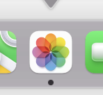

Показую як змінити пропорції фото на мак без фотошопу. Макбучна абетка.
При роботі з фото на компʼютері мак іноді виникає потреба змінити пропорції фото. Це можна зручно зробити за допомогою вбудованих програм редакторів зображень на мак.
Змінити пропорції фото в програмі "Фотографії"
Програма Фотографії є стандартною вбудованою програмою на мак для перегляду та редагування фотографій.
Щоб змінити пропорції фото відкрийте його в програмі "Фотографії". 
- Натисніть "Редагувати" в верхньому правому куті екрану.
В верхньому меню оберіть вкладку "Обтинання".
В правій частині екрану ви побачите меню "Пропорції", де можна обрати необхідну вам пропорцію на вибір, або задати власну.
При зміні пропорції зменшується видима частина зображення. За допомогою мишки або тачпаду затиснувши клік на зображенні можна перетягнути зображення вліво-вправо-вверх-вниз, щоб посунути видиму область.
Натисніть кнопку "Готово".
Коли необхідно змінювати пропорції фото?
Зміна пропорцій фото може бути необхідною в різних ситуаціях. Ось кілька прикладів, коли зміна пропорцій може бути корисною:
Розміщення фото в соціальних мережах або завантаження на вебсайт: Для того, щоб ваші фото виглядали краще в Інтернеті, вам може знадобитися змінити їх пропорції. Наприклад, якщо ви плануєте розмістити фото на Instagram, то краще використовувати пропорції 1:1.
Підготовка фото для друку: Якщо ви плануєте надрукувати фото, то, залежно від розміру фотопаперу, може знадобитися змінити пропорції фото, щоб воно вписалось на папір. Наприклад, якщо ви плануєте надрукувати фото на 4x6 дюймів, то вам необхідно змінити пропорції фото до 2:3.
Створення колажу: Якщо ви плануєте створити колаж з декількох фото, то вам може знадобитися змінити пропорції фото, щоб вони краще вписувалися одне до одного.
Виправлення перспективи: У деяких випадках фото може виглядати спотвореним через перспективу, особливо якщо його було зроблено з висоти або під кутом. У такому випадку зміна пропорцій може допомогти виправити спотворення та зробити фото більш приємним для очей.
Ось деякі оптимальні пропорції для популярних соціальних мереж та ютюбу:
Facebook: для фото оптимальна пропорція 1,91:1, або 1200 x 628 пікселів. Для обкладинки сторінки пропорція повинна бути 16:9, або 820 x 312 пікселів.
Instagram: для квадратних фото оптимальна пропорція 1:1, або 1080 x 1080 пікселів. Для фото в портретній орієнтації пропорція 4:5, або 1080 x 1350 пікселів. Для фото в альбомній орієнтації пропорція 1,91:1, або 1080 x 608 пікселів.
Twitter: для фото оптимальна пропорція 16:9, або 1200 x 675 пікселів. Для обкладинки профілю пропорція повинна бути 3:1, або 1500 x 500 пікселів.
LinkedIn: для фото оптимальна пропорція 4:3, або 400 x 300 пікселів. Для обкладинки профілю пропорція повинна бути 4:1, або 1536 x 768 пікселів.
YouTube: для мініатюри(Thumbnail) відео оптимальна пропорція 16:9, або 1920 x 1080 пікселів. Для обкладинки каналу пропорція повинна бути 16:9, або 2560 x 1440 пікселів.
Важливо пам'ятати, що ці оптимальні пропорції можуть змінюватися в залежності від конкретної функції соціальної мережі або платформи відео, тому перед публікацією зображення або відео необхідно перевірити вимоги до розмірів та пропорцій.
Читайте більше статей про редагування зображень на сторінці Робота з зображеннями на мак